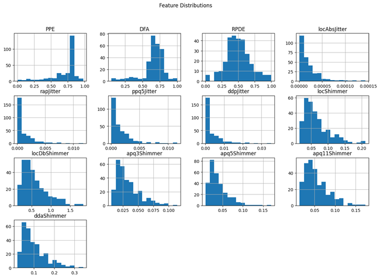
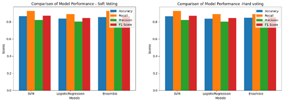
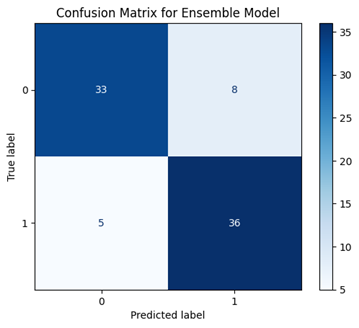
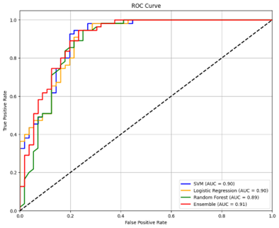

The elderly are most affected by Parkinson's disease (PD), and early recognition is essential for successful treatment. In the early stages of Parkinson's disease, patients usually have voice deficits that get worse as the condition progresses. This study employs a variety of classification algorithms to analyze voice characteristics in order to detect Parkinson's disease in its early stages. Speech data was collected from Sri Lankan Parkinson’s patients and healthy individuals, including early-diagnosed and mid-stage cases, using voice recorders and mobile phones to facilitate telemonitoring applications with simple vowel sounds. The preprocessing and feature extraction stages were fully automated, resulting in a dataset comprising 264 samples and 13 vocal features. Five classifiers: Support Vector Machine (SVM), K-Nearest Neighbors (KNN), Random Forest (RF), Logistic Regression (LR), and Long Short-Term Memory (LSTM) were employed for model training. The models were evaluated using precision, recall, accuracy, and F1-score metrics. Among these, SVM and LR demonstrated the best performance, leading to the development of a hybrid model combining these classifiers via a voting classifier, achieving an accuracy score of 87%. The trained model was integrated into a locally hosted interface, enabling real-time prediction and advancing telemonitoring capabilities. This study demonstrates the potential of vocal biomarkers and hybrid machine learning approaches in facilitating early recognition of Parkinson’s disease, particularly in underrepresented populations.